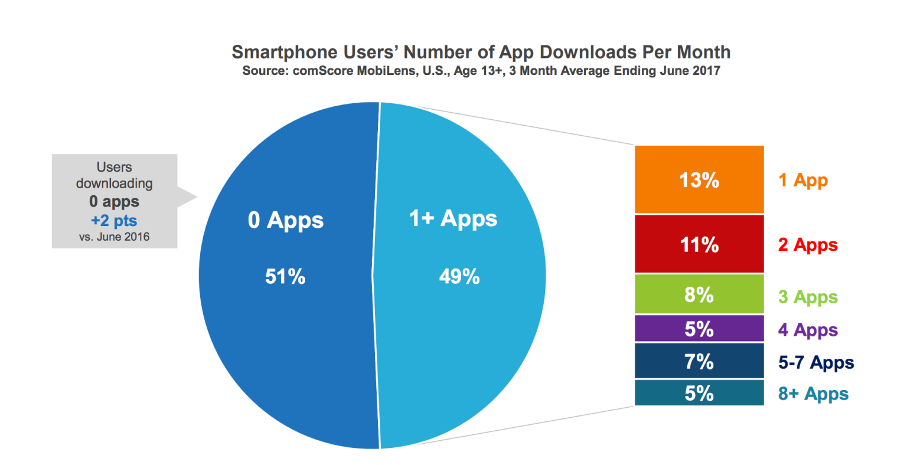

Key points
1. Why use service workers in an era of mobile apps
2. What do service workers offer
3. How to get started, wisely

6140
That's the number of new apps in the Play Store every day
Will people even overcome the high BTE to get your app?
Before

After
Before/After with service workers
Save offline requests
Many more recipes to play with
Getting started, wisely
Just paste this!
if ('serviceWorker' in navigator) {
window.addEventListener('load', function() {
navigator.serviceWorker.register('/sw.js')
.then(function(registration) {
// Registration was successful
console.log('ServiceWorker registration successful with scope: '
, registration.scope);
}, function(err) {
// registration failed :(
console.log('ServiceWorker registration failed: ', err);
});
});
}
Read more here!
Service Worker Life Cycle
1. Register
2. Install
3. Activate
Problems
1. Hard to test
2. A lot of undefined behaviour happening
3. No really good libraries
Thanks!
1. No one likes downloading apps
2. Service workers provide an app-like experience without barriers to entry
3. Service workers improve user experience. User experience is ESSENTIAL.